Chapitre 9 Analyses de survie
9.1 Généralités
L’analyse de survie est une collection de procédures statistiques pour l’analyse de données où la variable dépendante est le temps jusqu’à ce qu’un certain événement survienne. Cet événement peut être un décès, un événement de santé, une rechute après une rémission, une guérison ou toute autre expérience vécue par le sujet. Le temps peut être des années, mois, semaines ou jours depuis le début du suivi jusqu’à ce que l’événement survienne. Ce temps peut référer à l’âge du sujet au moment de l’événement, à un moment de son cycle de production (e.g. jours en lait), etc. On considère en général que l’événement ne se produit qu’une seule fois. Une caractéristique de ces données est que souvent plusieurs observations sont « censurées » (i.e. plusieurs individus n’expérimentent pas l’événement et on ne peut donc avoir un temps précis jusqu’à l’événement pour ces individus). La variable dépendante est le temps de survie sans l’événement. L’événement est l’échec (failure) parce que c’est souvent un événement « négatif ». Mais il peut aussi être positif, comme le temps pour le retour à la compétition après une chirurgie pour un cheval de course.
La librairie survival vous permettra de réaliser la plupart de vos analyses de survie.La librairie survminer facilitera la présentation des figures typiquement utilisées en analyse de survie.
Certains cas particuliers qui ne seront pas vu dans le cadre du cours demanderont des analyses de survie particulières :
1) si plus d’un événement sont considérés (e.g. une maladie qui se produit plus d’une fois, comme des cas de mammites), on considère alors que c’est un événement récurrent;
2) si le décès peut être le résultat de différentes causes, on peut considérer que c’est un risque compétitif (i.e. les maladies compétitionnent entre elles pour causer le décès).
Le jeu de donnée calf_pneu.csv sera utilisé pour les analyses non-paramétriques.
#J'importe ce jeu de données
calf <-read.csv(file="calf_pneu.csv", header=TRUE, sep=";")
head(calf)## calf stock days pn
## 1 1 1 27 1
## 2 2 1 49 1
## 3 3 1 72 1
## 4 4 1 79 1
## 5 5 1 90 1
## 6 6 1 113 19.2 Format des données pour une analyse de survie
La table plus haut illustre la disposition des données pour leur analyse, telle que requise par votre logiciel statistique. Une variable (calf dans ce cas) doit identifier chaque sujet, une autre (days) donne le temps de survie (votre variable déprendante), une autre indique le statut de l’individu à la fin du suivi (pn; en général 0 si censure, 1 si l’événement s’est produit). Les autres variables (une seule, stock, dans ce cas) seront les variables prédictives.
Par convention, les noms de variables dur et statut sont souvent utilisés pour définir le temps de survie et le statut de l’individu à la fin du suivi, respectivement.
9.3 Analyses non-paramétriques (Kaplan-Meier)
9.3.1 Table de Kaplan-Meier et temps median de survie
La fonction Surv() de la librairie survival permet d’indiquer les temps de survie et les statuts. C’est cette combinaison qui sera utilisée comme variable réponse dans les étapes subséquentes. Le premier argument indiqué est la variable décrivant le temps de survie (days), le deuxième argument est la variable décrivant le statut (pn).
La table de survie de Kaplan-Meier peut ensuite être produite à l’aide de la fonction survfit(). Le premier argument indique la fonction qui servira à générer les tables et courbes de survie. Si aucun prédicteur n’est indiqué (i.e., ~ 1), on demande alors une seule table et une seule courbe de survie. En ajoutant un prédicteur après le ~, on aura alors une table et une courbe par niveau du prédicteur.
- Vous pourrez directement utiliser la fonction
survfit()dans ce cas, le temps median de survie et son IC95 vous sera rapporté.
- Vous pouvez aussi créer un nouvel objet (par exemple
km_fit <- survfit()) et utiliser la fonctionsummary()sur cet objet. Dans ce cas, la table de survie de Kaplan-Meier sera présentée.
Le code suivant, par exemple, permet de présenter le temps médian de survie, puis de générer un nouvel objet que j’ai nommé km_fit et qui est, en fait, la table de Kaplan-Meier décrivant le temps jusqu’à une pneumonie pour 24 veaux.
library(survival)
survfit(Surv(days, pn) ~ 1, data=calf)## Call: survfit(formula = Surv(days, pn) ~ 1, data = calf)
##
## n events median 0.95LCL 0.95UCL
## 24 12 123 113 NAkm_fit <- survfit(Surv(days, pn) ~ 1, data=calf)
summary(km_fit)## Call: survfit(formula = Surv(days, pn) ~ 1, data = calf)
##
## time n.risk n.event survival std.err lower 95% CI upper 95% CI
## 27 24 1 0.958 0.0408 0.882 1.000
## 49 23 1 0.917 0.0564 0.813 1.000
## 72 22 1 0.875 0.0675 0.752 1.000
## 79 21 2 0.792 0.0829 0.645 0.972
## 89 19 1 0.750 0.0884 0.595 0.945
## 90 18 1 0.708 0.0928 0.548 0.916
## 101 17 1 0.667 0.0962 0.502 0.885
## 113 15 2 0.578 0.1019 0.409 0.816
## 117 9 1 0.514 0.1089 0.339 0.778
## 123 6 1 0.428 0.1198 0.247 0.7419.3.2 Courbe de survie de Kaplan-Meier
La courbe de survie de Kaplan-Meier pourra être générée en appliquant la fonction ggsurvplot() de la librairie survminerà ce nouvel objet km_fit. La librairie survminer et sa fonction ggsurvplot() sont très flexibles pour produire les figures en lien avec les analyses de survie.
library(survminer)
survie <- ggsurvplot(km_fit, conf.int = TRUE)
survie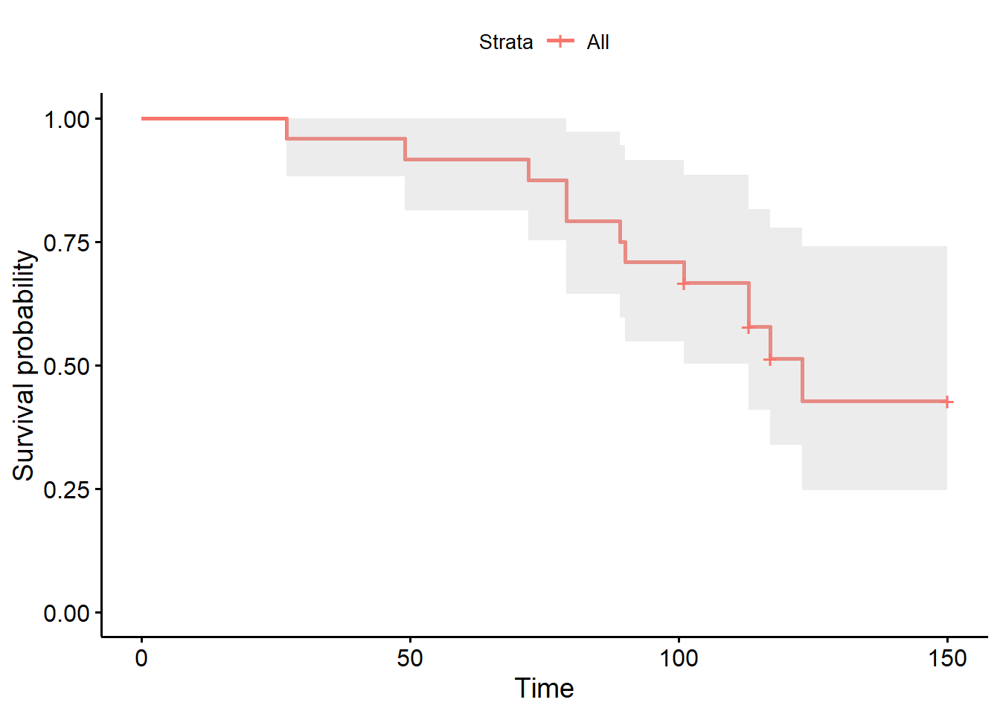
Et ce sera ensuite facile de modifier cette figure avec toutes les fonctions de ggplot auxquelles vous êtes habitué. Par exemple:
survie$plot +theme_bw()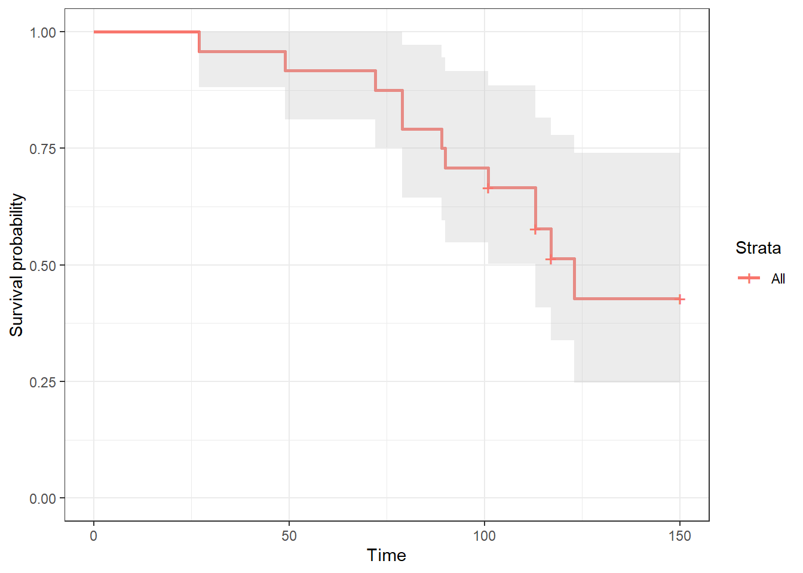
En continuant avec survminer, je pourrais demander la fonction d’échec (i.e., le contraire de la fonction de survie) à l’aide de l’argument fun="event".
library(survminer)
echec <- ggsurvplot(km_fit, conf.int = TRUE, fun="event")
echec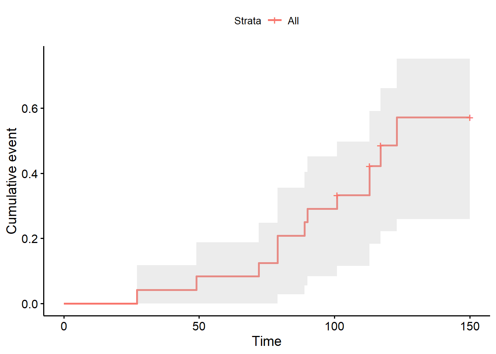
Ou encore la fonction de hasard cummulatif (i.e., cummulative hazard function) à l’aide de la fonction fun="cumhaz".
library(survminer)
cum <- ggsurvplot(km_fit, conf.int = TRUE, fun="cumhaz")
cum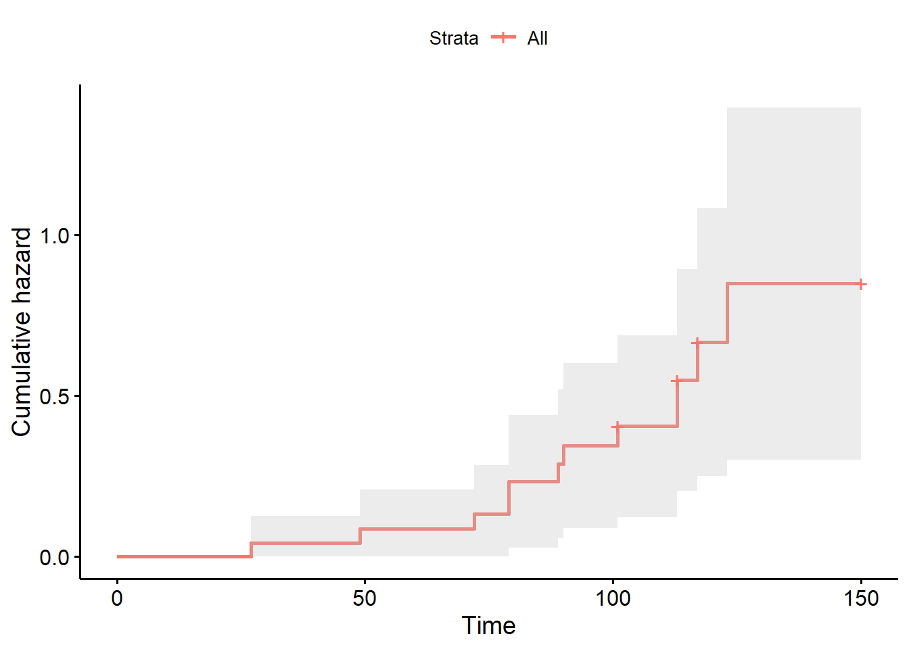
9.3.3 Estimer la probabilité de survie pour un temps donnée
L’argument times= de la fonction survfit() permet d’estimer la proportion (et son IC95) des individus qui “survivront” jusqu’à un temps t. Par exemple, ce code me permet d’estimer que 91.7% (IC95= 81.3, 100) des veaux n’avaient pas eu de pneumonie après 50 jours.
library(survival)
summary(survfit(Surv(days, pn) ~ 1, data=calf), times = 50)## Call: survfit(formula = Surv(days, pn) ~ 1, data = calf)
##
## time n.risk n.event survival std.err lower 95% CI upper 95% CI
## 50 22 2 0.917 0.0564 0.813 19.3.4 Comparaisons entre niveaux d’un prédicteur catégorique
L’analyse de survie non-paramétrique (i.e. Kaplan-Meier) permet de comparer les fonctions de survie des différents niveaux d’un prédicteur catégorique. Le code suivant, par exemple, permet de vérifier l’effet du type d’élevage (variable stock; en batch vs. en continu) sur le temps jusqu’à la pneumonie. Vous aurez maintenant un temps median de survie par niveau d’exposition (notez que celui-ci ne peut pas toujours être calculé, dépendamment du nombre d’observations).
library(survival)
survfit(Surv(days, pn) ~ stock, data=calf)## Call: survfit(formula = Surv(days, pn) ~ stock, data = calf)
##
## n events median 0.95LCL 0.95UCL
## stock=0 12 4 NA 123 NA
## stock=1 12 8 113 79 NAVous aurez également une table de Kaplan-Meier par niveau d’exposition.
library(survival)
km_fit_stock <- survfit(Surv(days, pn) ~ stock, data=calf)
summary(km_fit_stock)## Call: survfit(formula = Surv(days, pn) ~ stock, data = calf)
##
## stock=0
## time n.risk n.event survival std.err lower 95% CI upper 95% CI
## 79 12 1 0.917 0.0798 0.773 1
## 89 11 1 0.833 0.1076 0.647 1
## 101 10 1 0.750 0.1250 0.541 1
## 123 5 1 0.600 0.1673 0.347 1
##
## stock=1
## time n.risk n.event survival std.err lower 95% CI upper 95% CI
## 27 12 1 0.917 0.0798 0.773 1.000
## 49 11 1 0.833 0.1076 0.647 1.000
## 72 10 1 0.750 0.1250 0.541 1.000
## 79 9 1 0.667 0.1361 0.447 0.995
## 90 8 1 0.583 0.1423 0.362 0.941
## 113 7 2 0.417 0.1423 0.213 0.814
## 117 4 1 0.312 0.1398 0.130 0.751Finalement, vous aurez aussi une courbe de survie par niveau d’exposition.
library(survminer)
survie <- ggsurvplot(km_fit_stock, conf.int = TRUE)
survie$plot + theme_bw() +
xlab("Nombre de jours") +
ylab("Probabilité de survie")+
scale_fill_discrete(name = "Type d'élevage", labels = c("En batch", "En continu"))+
scale_color_discrete(name = "Type d'élevage", labels = c("En batch", "En continu"))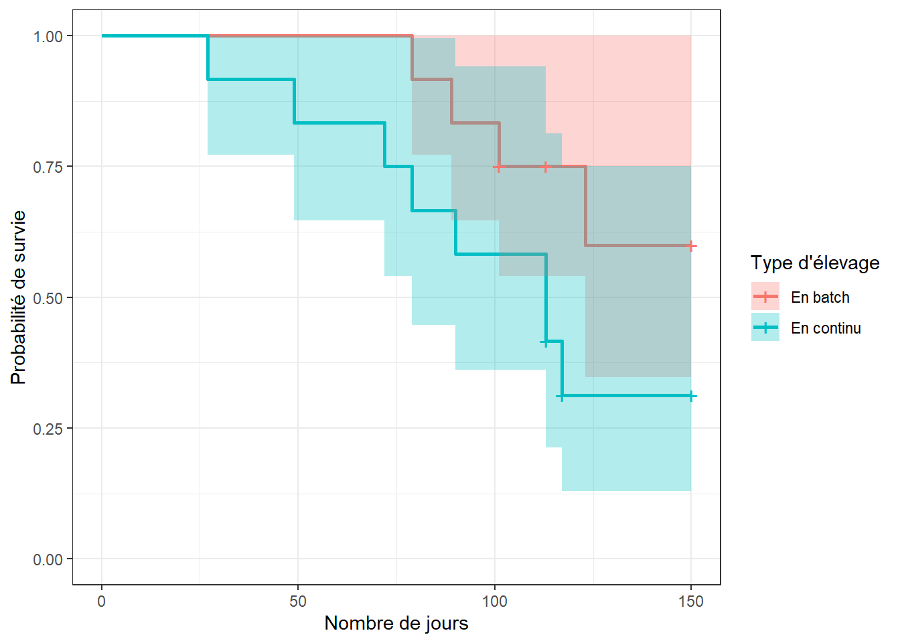
Finalement, vous pourrez tester les différences entre les niveaux d’exposition à l’aide des tests de log-rank et/ou de Wilcoxon à l’aide de la fonction survdiff(). Le premier argument est notre modèle, le deuxième est le jeu de données, l’argument rho=0 permettra d’indiquer que le test de log-rank est désiré. En utilisant rho=1, ce sera plutôt le test de Wilcoxon qui sera réalisé.
library(survival)
#log-rank
survdiff(Surv(days, pn) ~ stock, data=calf, rho=0)## Call:
## survdiff(formula = Surv(days, pn) ~ stock, data = calf, rho = 0)
##
## N Observed Expected (O-E)^2/E (O-E)^2/V
## stock=0 12 4 6.89 1.21 2.99
## stock=1 12 8 5.11 1.63 2.99
##
## Chisq= 3 on 1 degrees of freedom, p= 0.08#Wilcoxon
survdiff(Surv(days, pn) ~ stock, data=calf, rho=1)## Call:
## survdiff(formula = Surv(days, pn) ~ stock, data = calf, rho = 1)
##
## N Observed Expected (O-E)^2/E (O-E)^2/V
## stock=0 12 2.89 5.25 1.06 3.13
## stock=1 12 6.41 4.05 1.38 3.13
##
## Chisq= 3.1 on 1 degrees of freedom, p= 0.08Dans ce cas, les deux tests donnent une valeur de P de 0.08. C’est donc dire que les courbes de survie des veaux élevés en batch ou en continu ne sont pas différentes.
Notez que plus d’une variable peut être utilisée pour stratifier les données. Par exemple, le jeu de données pgtrial.csv contient plusieurs prédicteurs. Cette étude est un essai clinique randomisé sur l’effet de l’administration d’une dose de prostaglandine vs. d’un placebo (la variable tx) au début de la période de reproduction sur le nombre de jours (la variable dar) jusqu’à la conception (la variable preg). L’hypothèse était que l’administration de prostaglandine réduirait le nombre de jours jusqu’à la conception. Les 319 vaches de cette étude étaient suivies jusqu’à un maximum de 346 jours en lait. Trois autres prédicteurs étaient aussi évalués: le nombre de lactation (lact; 1, 2, 3…), l’état de chair (thin; 0=normal, 1=thin) et le troupeau (herd; 3 troupeaux).
pgtrial <-read.csv(file="pgtrial.csv", header=TRUE, sep=";")
head(pgtrial)## herd cow tx lact thin dar preg
## 1 1 1 0 1 0 1 1
## 2 1 2 1 4 1 1 1
## 3 1 3 1 1 0 2 1
## 4 1 4 1 1 0 3 1
## 5 1 5 1 6 0 3 0
## 6 1 6 1 1 0 3 1#J'indique les variables catégoriques dans mon jeu de données
pgtrial$thin <- factor(pgtrial$thin)
pgtrial$herd <- factor(pgtrial$herd) Le code suivant pourra être utilisé pour effectuer une analyse de survie non-paramétrique par groupe de traitement (tx) ET par état de chair (thin). Dans ce cas, vous auriez quatre strates de tx par thin possibles (0-0, 0-1, 1-0, et 1-1). La fonction survfit() vous rapportera alors toutes les comparaisons entre chaque paire de strates (4 comparaisons dans ce cas).
library(survival)
survfit(Surv(dar, preg) ~ tx + thin, data=pgtrial)## Call: survfit(formula = Surv(dar, preg) ~ tx + thin, data = pgtrial)
##
## n events median 0.95LCL 0.95UCL
## tx=0, thin=0 73 63 70 58 90
## tx=0, thin=1 95 76 68 52 105
## tx=1, thin=0 73 60 66 40 88
## tx=1, thin=1 78 65 53 32 91km_fit_pg <- survfit(Surv(dar, preg) ~ tx + thin, data=pgtrial)
survdiff(Surv(dar, preg) ~ tx + thin, data=pgtrial, rho=0)## Call:
## survdiff(formula = Surv(dar, preg) ~ tx + thin, data = pgtrial,
## rho = 0)
##
## N Observed Expected (O-E)^2/E (O-E)^2/V
## tx=0, thin=0 73 63 60.8 0.0806 0.107
## tx=0, thin=1 95 76 88.3 1.7023 2.634
## tx=1, thin=0 73 60 53.8 0.7213 0.928
## tx=1, thin=1 78 65 61.2 0.2380 0.317
##
## Chisq= 2.8 on 3 degrees of freedom, p= 0.4library(survminer)
ggsurvplot(km_fit_pg, conf.int = TRUE)
C’est beaucoup d’information sur une même figure! Vous pourriez aussi la séparer à l’aide de la fonction facet_grid() de la librairie ggplot2 afin de pouvoir comparer plus aisément l’effet du traitement chez les vaches maigres, puis chez les vaches normales.
ggsurv <- ggsurvplot(km_fit_pg, conf.int = TRUE)
ggsurv$plot +theme_bw() +
theme (legend.position = "right")+
facet_grid( ~ thin)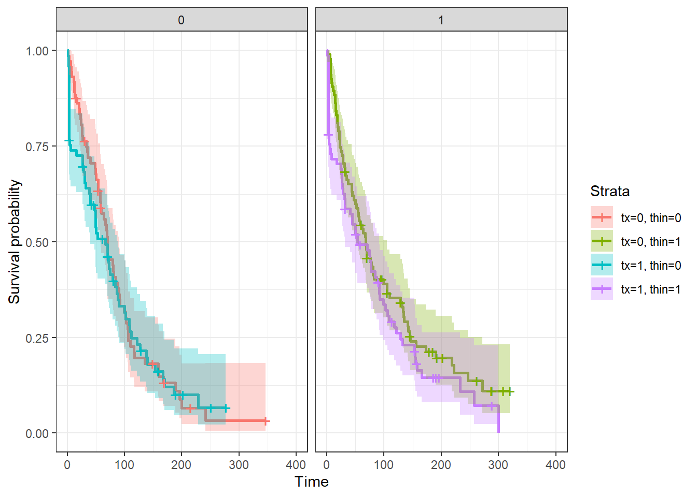
9.4 Régression Cox à hasard proportionnel
Si on veut comparer la survie de deux groupes en ajustant pour les effets confondants ou des modificateurs d’effet potentiels, on peut utiliser un modèle de risques proportionnels (proportional hazards model) ou modèle de régression de Cox. La fonction coxph() (pour Cox Proportional Hazard) de la librairie survival permet de réaliser les régressions de Cox.
Par exemple, le code suivant permet d’estimer un modèle de Cox à hasard proportionnel qui décrit l’effet d’un traitement à la prostaglandine (tx) sur le temps jusqu’à la conception (dar et preg) après ajustement pour les biais de confusion par la parité (lact), l’état de chair (thin) et le troupeau d’origine (herd).
library(survival)
PH_fit_pg <- coxph(Surv(dar, preg) ~ tx + lact + thin + herd, data=pgtrial)
summary(PH_fit_pg)## Call:
## coxph(formula = Surv(dar, preg) ~ tx + lact + thin + herd, data = pgtrial)
##
## n= 319, number of events= 264
##
## coef exp(coef) se(coef) z Pr(>|z|)
## tx 0.19603 1.21657 0.12543 1.563 0.118
## lact -0.04360 0.95733 0.04118 -1.059 0.290
## thin1 -0.14713 0.86318 0.13804 -1.066 0.286
## herd2 -0.28544 0.75169 0.16993 -1.680 0.093 .
## herd3 0.04032 1.04115 0.17453 0.231 0.817
## ---
## Signif. codes: 0 '***' 0.001 '**' 0.01 '*' 0.05 '.' 0.1 ' ' 1
##
## exp(coef) exp(-coef) lower .95 upper .95
## tx 1.2166 0.8220 0.9514 1.556
## lact 0.9573 1.0446 0.8831 1.038
## thin1 0.8632 1.1585 0.6586 1.131
## herd2 0.7517 1.3303 0.5388 1.049
## herd3 1.0411 0.9605 0.7395 1.466
##
## Concordance= 0.565 (se = 0.019 )
## Likelihood ratio test= 9.94 on 5 df, p=0.08
## Wald test = 9.76 on 5 df, p=0.08
## Score (logrank) test = 9.78 on 5 df, p=0.08La fonction summary() vous permet de rapporter le nombre d’observations (n=319) et le nombre de vaches ayant eu une conception (n=264). Ont vous rapporte ensuite les coefficients pour chacun des prédicteurs, leur erreur-type, leur IC95 et la valeur de P du test de Wald pour ce coefficient particulier. La table suivante présente les hazard ratios (HR) et leur IC95 (ce sont simplement les coefficients et leur IC95 mis à l’exposant). Enfin, le test de rapport de vraisemblance qui vérifie si au moins un coefficient est différent de 0 est présenté (ici, P=0.08).
Pour générer une figure de la fonction de survie de Cox, on devra utiliser la fonction ggadjustedcurves() de la librairie survminer. L’argument variable="tx" me permet de générer des fonctions de survie de Cox par niveaux d’un prédicteur (ici tx).
#La courbe de survie de Cox
library(survminer)
ggadjustedcurves(PH_fit_pg, variable="tx")## Warning in .get_data(fit, data): The `data` argument is not provided. Data will
## be extracted from model fit.Figure 9.1: Fonction de survie de Cox par niveau de la variable traitement.
9.4.1 Analyses stratifiées
On peut réaliser une analyse stratifiée par un prédicteur à l’aide de la fonction strata(). L’analyse stratifiée par un prédicteur pourra être utile:
- lorsque ce prédicteur ne satisfait pas à la supposition de proportionnalité des Hazard Ratio et que le prédicteur n’est pas d’intérêt direct (e.g. un facteur confondant);
- afin de prendre en compte le regroupement d’observations (la variable de stratification sera alors la variable indiquant le groupe d’appartenance; herd dans l’exemple suivant).
library(survival)
PH_fit_pg <- coxph(Surv(dar, preg) ~ tx + lact + thin + strata(herd), data=pgtrial)
summary(PH_fit_pg)## Call:
## coxph(formula = Surv(dar, preg) ~ tx + lact + thin + strata(herd),
## data = pgtrial)
##
## n= 319, number of events= 264
##
## coef exp(coef) se(coef) z Pr(>|z|)
## tx 0.20490 1.22740 0.12622 1.623 0.105
## lact -0.04218 0.95870 0.04101 -1.029 0.304
## thin1 -0.13871 0.87048 0.13857 -1.001 0.317
##
## exp(coef) exp(-coef) lower .95 upper .95
## tx 1.2274 0.8147 0.9584 1.572
## lact 0.9587 1.0431 0.8847 1.039
## thin1 0.8705 1.1488 0.6634 1.142
##
## Concordance= 0.558 (se = 0.021 )
## Likelihood ratio test= 5.43 on 3 df, p=0.1
## Wald test = 5.44 on 3 df, p=0.1
## Score (logrank) test = 5.46 on 3 df, p=0.1Notez que l’effet de la variable utilisée pour stratifier n’est plus calculé maintenant.
9.4.2 Prédicteur dont la valeur change dans le temps
Lorsqu’un prédicteur peut changer de valeur en cours de suivi, le jeu de données doit être réorganisé avec plusieurs intervalles pour chaque sujet. Ce format s’appelle le counting process format (CP). Le format CP est en fait adapté à plusieurs situations d’analyse de survie complexes:
- quand il y a présence de prédicteurs dont la valeur change dans le temps;
- quand l’âge plutôt que le temps est utilisé comme mesure du suivi (on voudra alors indiquer l’âge de début et l’âge de fin);
- quand il y a des évènements récurrents et/ou que l’occurrence de l’évènement ne peut être observé en continu (ex: animaux testés mensuellement pour identifier l’acquisition d’une infection).
Le format général des données dans le format CP est montré à la table suivante. Pour chaque individu, il y a plusieurs lignes: chaque temps de suivi est divisé en petits intervalles de temps. Il y a aussi deux variables de temps spécifiées pour chaque individu, une indiquant le début du suivi (start dans ce cas) et une indiquant la fin du suivi (stop dans ce cas). Une variable (dead2 dans ce cas) indique ce qui s’est produit à la fin du suivi (dans cet exemple censure=0 et mort=1).
stan <-read.csv(file="stanlong.csv", header=TRUE, sep=";")
head(stan)## id dead surg ageaccpt trans plant start dead2 stop
## 1 1 1 0 30.84463 0 0 0.0 1 49.0
## 2 2 1 0 51.83573 0 0 0.0 1 5.0
## 3 3 1 0 54.29706 1 0 0.0 0 0.1
## 4 3 1 0 54.29706 1 1 0.1 1 15.0
## 5 4 1 0 40.26283 1 0 0.0 0 35.0
## 6 4 1 0 40.26283 1 1 35.0 1 38.0Dans l’exemple plus haut, on voit que les individus 3 et 4 ont bien 2 intervalles de temps (2 rangées) puisque le prédicteur trans (indiquant s’ils ont eu ou non une transplatation cardiaque) à changé de valeur (de 0 à 1) pour ces individus durant l’étude. Ont comprend donc que l’individu 3 a reçu une transplantation très rapidement à 0.1 jour (c’est là que sons statut trans à changé) et il est malheureusement décédé à 15 jours. L’individu 4 a reçu une transplantation 15 jours après son accident cardio-vasculaire et il est décédé 3 jours plus tard, soit 38 jours après son accident cardio-vasculaire.
Pour analyser ce genre de données, vous devrez indiquer les variables indiquant le début et la fin de chaque intervalle dans votre fonction surv() à la place de votre variable représentant le temps (e.g. dur, dar, ou days). Par exemple, le modèle suivant présente le temps d’un accident cardio-vasculaire jusqu’au décès en fonction de si le patient à reçu une transplantation cardiaque (une variable qui peut changer de valeur dans le temps) et après ajustement pour l’âge du patient.
library(survival)
PH_fit_stan <- coxph(Surv(start, stop, dead2) ~ trans + ageaccpt, data=stan)
summary(PH_fit_stan)## Call:
## coxph(formula = Surv(start, stop, dead2) ~ trans + ageaccpt,
## data = stan)
##
## n= 172, number of events= 75
##
## coef exp(coef) se(coef) z Pr(>|z|)
## trans -1.80047 0.16522 0.27225 -6.613 3.76e-11 ***
## ageaccpt 0.06020 1.06205 0.01531 3.933 8.40e-05 ***
## ---
## Signif. codes: 0 '***' 0.001 '**' 0.01 '*' 0.05 '.' 0.1 ' ' 1
##
## exp(coef) exp(-coef) lower .95 upper .95
## trans 0.1652 6.0525 0.0969 0.2817
## ageaccpt 1.0620 0.9416 1.0307 1.0944
##
## Concordance= 0.721 (se = 0.035 )
## Likelihood ratio test= 44.46 on 2 df, p=2e-10
## Wald test = 46.04 on 2 df, p=1e-10
## Score (logrank) test = 51.05 on 2 df, p=8e-12Le HR de décès chez les patients ayant eu une transplantation cardiaque était 0.17 (IC95: 0.10, 0.28) fois celui de ceux qui n’en ont pas eu. Pour cette dernière catégorie, le temps passé sans transplantation par des patients qui seront transplantés dans le futur est aussi compilé.
9.4.3 Prédicteur dont l’effet change dans le temps
Avec le modèle de régression de Cox, le risque peut évoluer au cours du temps, mais il doit rester proportionnel entre sujets avec différents niveaux d’exposition. Cette suposition pourra être vérifiée (voir section évaluation du modèle). Cette supposition peut aussi être relaxée en ajoutant une interaction entre le temps et un prédicteur. Si cette interaction est significativement différente de zéro, on concluera que le risque n’était pas proportionnel et ont présentera alors les résultats du modèle avec l’interaction. Pour ce faire, la variable représentant le temps pourra être transformée (e.g., une transformation log, une catégorisation en deux ou plus de deux catégories, etc) en fonction de la biologie du phénomène étudié.
Par exemple, le code suivant permettrait d’évaluer une interaction avec le temps représentant un changement d’effet de la prostaglandine entre les 5 premiers jours vs. le reste de la période de suivi. Ont pourrait émettre l’hypothèse que le traitement aux prostaglandines aura un effet dans les 5 jours suivants l’administration, mais aucun ou peu d’effet par la suite. Important: en ajoutant un terme d’interaction (ex: \(tx*time5\) dans votre fonction coxph(), R incluera automatiquement les deux termes principaux pour cette interaction (\(tx\) et \(time5\)) en plus de l’interaction (\(tx*time5\)). Or, il n’est pas possible d’estimer dans ce modèle le terme principal \(time5\) puisque la notion de temps, fait également partie de l’issue. Vous devrez donc indiquer à R de retirer ce terme principal simplement en ajoutant - time5 dans votre modèle. De cette manière, ce terme ne sera pas inclu.
#Je commence par créer une prédicteur "temps" que j'ai nommer time et qui prend les valeurs 0-5 days vs. >5 days
pgtrial$time5 <- cut(pgtrial$dar, breaks = c(0, 5, Inf),labels = c("0-5 days", ">5 days"))
#Ensuite, je peux tester une interaction entre time et tx
library(survival)
PH_fit_pg <- coxph(Surv(dar, preg) ~ tx*time5 -time5 + lact + thin + herd, data=pgtrial)
summary(PH_fit_pg)## Call:
## coxph(formula = Surv(dar, preg) ~ tx * time5 - time5 + lact +
## thin + herd, data = pgtrial)
##
## n= 319, number of events= 264
##
## coef exp(coef) se(coef) z Pr(>|z|)
## tx 5.461468 235.442858 0.589539 9.264 <2e-16 ***
## lact -0.055402 0.946105 0.039061 -1.418 0.156
## thin1 -0.170799 0.842991 0.138408 -1.234 0.217
## herd2 -0.217645 0.804411 0.170209 -1.279 0.201
## herd3 -0.037483 0.963211 0.176023 -0.213 0.831
## tx:time5>5 days -5.638785 0.003557 0.595293 -9.472 <2e-16 ***
## ---
## Signif. codes: 0 '***' 0.001 '**' 0.01 '*' 0.05 '.' 0.1 ' ' 1
##
## exp(coef) exp(-coef) lower .95 upper .95
## tx 2.354e+02 4.247e-03 74.142836 747.65604
## lact 9.461e-01 1.057e+00 0.876376 1.02138
## thin1 8.430e-01 1.186e+00 0.642702 1.10570
## herd2 8.044e-01 1.243e+00 0.576229 1.12295
## herd3 9.632e-01 1.038e+00 0.682166 1.36004
## tx:time5>5 days 3.557e-03 2.811e+02 0.001108 0.01142
##
## Concordance= 0.663 (se = 0.021 )
## Likelihood ratio test= 199.5 on 6 df, p=<2e-16
## Wald test = 96.56 on 6 df, p=<2e-16
## Score (logrank) test = 459.8 on 6 df, p=<2e-16Nous notons maintenant que, comme l’hypothèse que nous avions émise, le traitement aux prostaglandine augmente le hasard de conception dans le 5 jours suivant l’injection (HR= 235). Par contre, après 5 jours, l’effet semble minime. Le coefficient après 5 jours serait de -0.18 (i.e., 5.46 + -5.64), donc un HR de 0.84. L’interaction est significative (P< 0.001). Ont pourrait demander des contrastes pour comparer ces derniers résultats.
library(emmeans)
#Je génère d'abor l'objet contrast à partir de mon modèle
contrast <- emmeans(PH_fit_pg, c("tx", "time5"))
#Je demande les comparaisons pairées, je voulais voir Tx=1 vs Tx=0, j'ai donc du utilisé reverse=TRUE. Puis j'ai ajouté les IC95 avec confint
result <- confint(pairs(contrast, reverse = TRUE))
#Je retravaille mes résultats pour la présentation. D'abord en les mettant à l'exposant pour avoir des HR, puis en arrondissant.
result$HR <- round(exp(result$estimate), digits=2)
result$lowCI <- round(exp(result$asymp.LCL), digits=2)
result$hiCI <- round(exp(result$asymp.UCL), digits=2)
#Je ne conserve que les rangée (2 et 5) et les colonnes (1, 7, 8, 9) qui m'intéressent
result2 <- result[c(2,5),c(1, 7, 8, 9)]
library(knitr)
library(kableExtra)
kable (result2, caption="HR et IC95 d'un traitement à la prostaglandine sur le risque de conception dans les 5 jours suivant le traitement vs. après 5 jours.")%>%
kable_styling()| contrast | HR | lowCI | hiCI | |
|---|---|---|---|---|
| 2 | (0-5 days 1) - (0-5 days 0) | 235.44 | 51.78 | 1070.64 |
| 5 | >5 days 1 - >5 days 0 | 0.84 | 0.59 | 1.20 |
Dans les 5 jours suivant l’injection le HR est de 235.44 (IC95: 51.78, 1070.64), alors que après 5 jours, le HR est de 0.84 (IC95: 0.59, 1.20).
Le code suivant permettrait d’évaluer une interaction avec le temps représentant un changement d’effet exponentiel durant la période de suivi (i.e., un effet qui diminue ou augmente graduellement, plutôt que de manière catégorique).
#Je commence par créer une prédicteur "temps" logarithmique
pgtrial$lntime <- log(pgtrial$dar)
#Ensuite, je peux tester une interaction entre lntime et tx
library(survival)
PH_fit_pg <- coxph(Surv(dar, preg) ~ tx*lntime -lntime + lact + thin + herd, data=pgtrial)
summary(PH_fit_pg)## Call:
## coxph(formula = Surv(dar, preg) ~ tx * lntime - lntime + lact +
## thin + herd, data = pgtrial)
##
## n= 319, number of events= 264
##
## coef exp(coef) se(coef) z Pr(>|z|)
## tx 8.04911 3131.01263 0.59026 13.636 <2e-16 ***
## lact -0.04273 0.95817 0.03956 -1.080 0.280
## thin1 -0.11277 0.89336 0.14024 -0.804 0.421
## herd2 -0.10207 0.90297 0.16959 -0.602 0.547
## herd3 -0.10909 0.89665 0.17738 -0.615 0.539
## tx:lntime -1.80673 0.16419 0.13385 -13.498 <2e-16 ***
## ---
## Signif. codes: 0 '***' 0.001 '**' 0.01 '*' 0.05 '.' 0.1 ' ' 1
##
## exp(coef) exp(-coef) lower .95 upper .95
## tx 3131.0126 0.0003194 984.5795 9956.7790
## lact 0.9582 1.0436592 0.8867 1.0354
## thin1 0.8934 1.1193698 0.6787 1.1760
## herd2 0.9030 1.1074618 0.6476 1.2590
## herd3 0.8967 1.1152585 0.6333 1.2694
## tx:lntime 0.1642 6.0904812 0.1263 0.2134
##
## Concordance= 0.75 (se = 0.019 )
## Likelihood ratio test= 302.2 on 6 df, p=<2e-16
## Wald test = 191.9 on 6 df, p=<2e-16
## Score (logrank) test = 448.9 on 6 df, p=<2e-16Ici aussi l’interaction est significative (P<0.001). Au jour 1 (lntime=0), l’effet du tx est un HR de exp(8.05) ou 3131! Puis, l’effet du traitement en log(HR) diminue de -1.81 à chaque augmentation de 1 log jour. Pour mieux visualiser tout ça, une figure pourrait être utile.
#Je génère le jeu de données avec les valeurs de temps qui m'intéressent (jours 1 à 90) et j'y met les coefficients dont j'ai besoin.
new <- data.frame(tx=8.04, tx_lntime_int=-1.81, time=c(1:90))
new$lntime <- log(new$time)
new$hr <- exp(new$tx + new$lntime*new$tx_lntime_int)
library(ggplot2)
ggplot(new, mapping=aes(x=time, y=hr))+
geom_line()+
theme_bw() +
ylab(label = "Hazard ratio")Figure 9.2: Figure. Hasard ratio présentant l’effet de la prostaglandine sur le hasard de conception en fonction des jours suivant l’injection.
On note que l’effet du traitement diminue rapidement. Notre modèle 0-5 vs. >5 jours indiquait le même patron (et était peut-être aussi plus simple à expliquer?).
9.5 Évaluation du modèle
9.5.1 Linéarité de la relation (pour les prédicteurs quantitatifs)
La linéarité de la relation est une supposition importante du modèle. Pour les prédicteurs quantitatifs, vous devrez toujours vérifier si cette supposition est bien respectée. Vous pouvez le faire simplement à l’aide du modèle polynomial comme vu précédemment (en ajoutant le \(prédicteur^2\) ou le \(prédicteur^2\) et le \(prédicteur^3\) dans votre modèle).
Une autre possibilité est l’évaluation du graphique du prédicteur quantitatif que nous désirons évaluer par les résiduels de Martingdale d’un modèle où le prédicteur quantitatif a été retiré du modèle. Une fonction de lissage (comme vu précédemment) permettra de visualiser s’il y a une courbe ou non dans la relation. Les résiduels de Martingdale peuvent être obtenus grâce à la fonction resid(). La relation pourra être représentée grâce à la fonction ggplot de la librairie ggplot2. Par exemple, le code suivant permet d’évaluer la linéarité de la relation entre la variable lact et le hasard de conception.
#Faire rouler le modèle sans le prédicteur continu lact
PH_fit_pg_WO_lact <- coxph(Surv(dar, preg) ~ tx + thin + herd, data=pgtrial)
#Ajouter les résiduels de Martingale dans mon jeu de données
pgtrial$res <- resid(PH_fit_pg_WO_lact)
library(ggplot2)
ggplot(data=pgtrial, mapping=aes(x=lact, y=res))+
geom_point() + #Je demande d'ajouter le nuage de points (un 'scatterplot')
geom_smooth(method="loess", span=2)+ #Je demande d'ajouter la courbe lissée de type loess.
theme_bw() ## `geom_smooth()` using formula 'y ~ x'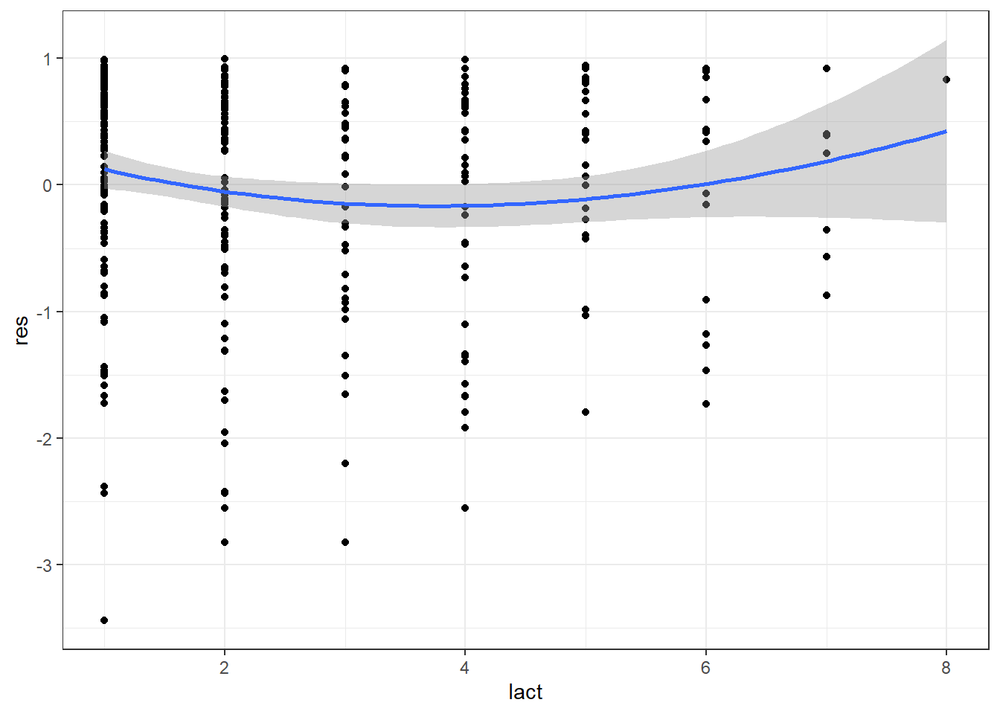
Dans cet exemple, on note que la relation est curvilinéaire. Notez que le modèle polynomial indique également que le terme au carré est important (P = 0.03) et que la relation n’était donc pas linéaire (voir le code qui suit).
#Lactation centrée sur 2ième parité et au carré
pgtrial$lact_ct <- pgtrial$lact-2
pgtrial$lact_ct_sq <- (pgtrial$lact-2)*(pgtrial$lact-2)
#La régression de cox avec terme polynomiaux
PH_fit_pg_lact_sq <- coxph(Surv(dar, preg) ~ tx + lact_ct + lact_ct_sq + thin + herd, data=pgtrial)
summary(PH_fit_pg_lact_sq)## Call:
## coxph(formula = Surv(dar, preg) ~ tx + lact_ct + lact_ct_sq +
## thin + herd, data = pgtrial)
##
## n= 319, number of events= 264
##
## coef exp(coef) se(coef) z Pr(>|z|)
## tx 0.19308 1.21298 0.12502 1.544 0.1225
## lact_ct -0.17281 0.84129 0.07193 -2.402 0.0163 *
## lact_ct_sq 0.04676 1.04787 0.02108 2.218 0.0266 *
## thin1 -0.09586 0.90859 0.13897 -0.690 0.4903
## herd2 -0.29904 0.74153 0.16985 -1.761 0.0783 .
## herd3 0.01297 1.01305 0.17417 0.074 0.9406
## ---
## Signif. codes: 0 '***' 0.001 '**' 0.01 '*' 0.05 '.' 0.1 ' ' 1
##
## exp(coef) exp(-coef) lower .95 upper .95
## tx 1.2130 0.8244 0.9494 1.5498
## lact_ct 0.8413 1.1886 0.7307 0.9687
## lact_ct_sq 1.0479 0.9543 1.0054 1.0921
## thin1 0.9086 1.1006 0.6920 1.1930
## herd2 0.7415 1.3486 0.5316 1.0344
## herd3 1.0131 0.9871 0.7201 1.4252
##
## Concordance= 0.571 (se = 0.02 )
## Likelihood ratio test= 14.66 on 6 df, p=0.02
## Wald test = 14.66 on 6 df, p=0.02
## Score (logrank) test = 14.73 on 6 df, p=0.029.5.2 Valider la supposition de hasard proportionnel
La supposition de risque proportionnel peut être vérifiée en ajoutant une intéraction avec le temps (comme présenté à la section “Prédicteur dont l’effet change dans le temps”). Cette intéraction peut également être une solution lorsque la supposition de risque proportionnel n’est pas respectée. Mais il existe plusieurs autres méthodes afin de vérifier la supposition de risque proportionnel.
9.5.2.1 Pour un prédicteur catégorique:
Option 1: Comparer graphiquement le log du hasard cummulatif (ln H(t)) par le log du temps pour chaque niveau du prédicteur. Ces droites devraient être parallèles si les hasards sont proportionnels. Le graphique ln H(t) * ln temps peut être produit en: 1) faisant tourner un modèle de Kaplan-Meier avec juste la variable qui nous intéresse (tx dans l’exemple qui suit) à l’aide de la fonction survfit(), puis 2) en demandant de produire la figure à partir de cet objet à l’aide de la fonction plot() et de l’argument fun=cloglog (qui indique la figure désirée).
library(survival)
#Le modèle de K-M avec la variable qui m'intéresse
KM_fit_pg <- survfit(Surv(dar, preg) ~ tx, data=pgtrial)
#La figure ln(H(t)) par ln(temps)
plot(KM_fit_pg, col=c("blue", "red"), fun="cloglog", xlab="days", ylab="Log(H(t))")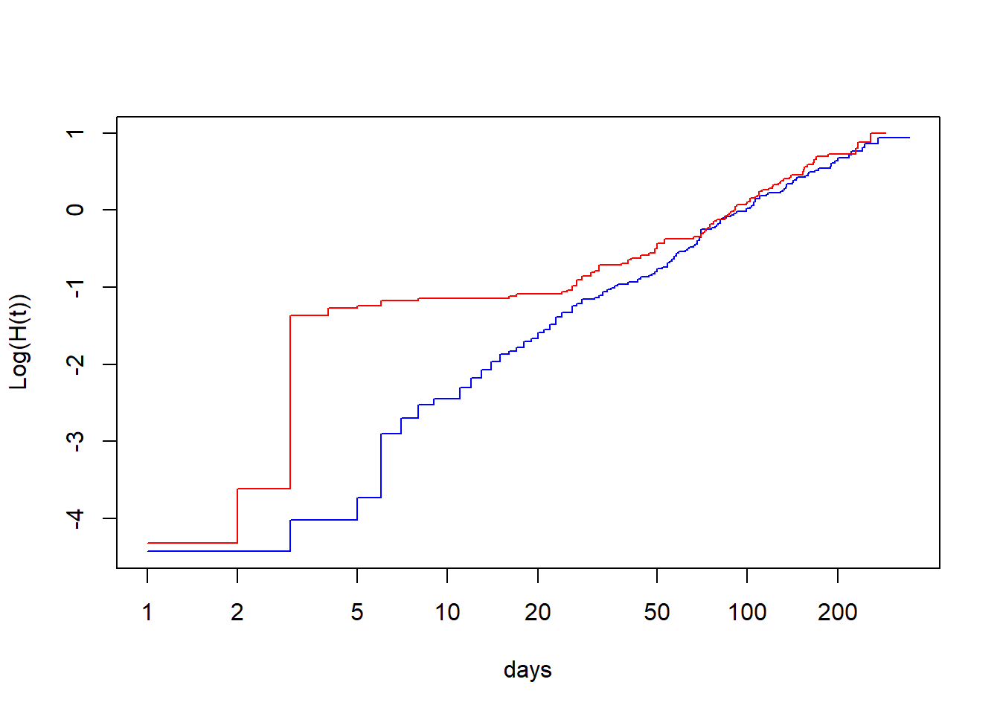
Ici, les droites ne sont clairement pas parallèles jusqu’à approximativement 20 à 50 jours.
Option 2: comparer graphiquement les courbes de survie produites à l’aide du modèle de Cox (qui suppose hasard proportionnel) et d’une analyse de survie non-paramétrique (Kaplan-Meier; qui ne suppose rien). Les graphiques devraient être très similaires si les hasards sont proportionnels.
library(survminer)
#La courbe de survie de Kaplan-Meier
ggsurvplot(KM_fit_pg)
#Le modèle de cox équivalent
library(survival)
PH_fit_pg <- coxph(Surv(dar, preg) ~ tx, data=pgtrial)
#La courbe de survie de Cox
ggadjustedcurves(PH_fit_pg, variable="tx")## Warning in .get_data(fit, data): The `data` argument is not provided. Data will
## be extracted from model fit.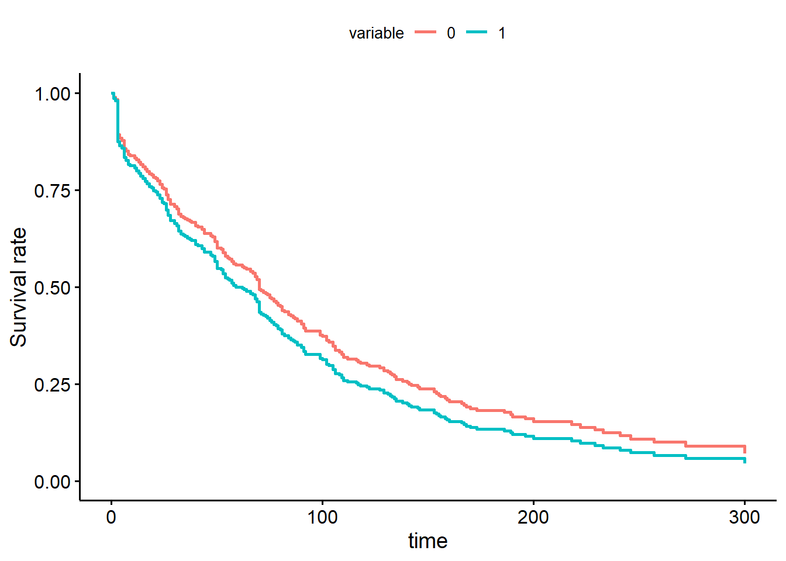
Notez que les courbes de survie de Kaplan-Meier et de Cox sont passablement différentes entre 0 et 50 jours.
9.5.2.2 Pour un prédicteur catégorique OU quantitatif
Une dernière approche qui permet d’évaluer la supposition de risque proportionnel et qui fonctionne pour des prédicteurs catégoriques ET quantitatifs est l’évaluation d’un graphique des résiduels de Schoenfeld par le logarithme du temps (t). Une fonction de lissage pourra être utilisée afin de visualiser la tendance générale. Si la supposition de risque proportionnel est respectée, une ligne de tendance horizontale (i.e. avec une pente=0) devrait être observée. Notez qu’un résiduel de Schoenfeld différent sera produit pour chacun des prédicteurs du modèle. Vous devrez donc utiliser le résiduel correspondant au prédicteur que vous désirez évaluer.
Pour générer cette figure, vous devrez d’abord créer votre objet modèle de Cox (à l’aide de la fonction coxph()). Puis, vous devez créer un nouvel objet à partir de celui-ci à l’aide de la fonction cox.zph() de la librairie survival. Finalement, à l’aide de la librairie survminer vous pourrez utiliser la fonction ggcoxzph() sur ce dernier objet. Dans l’exemple suivant, je vérifie la supposition de hasard proportionnel pour la variable lact.
#Je génère le modèle de Cox
library(survival)
PH_fit_pg <- coxph(Surv(dar, preg) ~ tx + lact + thin + herd, data=pgtrial)
#Je génère l'objet cox.zph
fit <- cox.zph(PH_fit_pg)
#Je demande la figure spécifiquement pour la variable lact
library(survminer)
ggcoxzph(fit, var="lact") 
Dans tous les cas, la ligne est très près d’être horizontale (i.e. pente=0). La supposition de hasard proportionnel est donc probablement respectée pour la variable lact. Notez que le résultat d’un trest de Schoenfeld est également présenté. L’hypothèse nulle de ce test est que la pente n’est pas différente de zéro (i.e., la supposition de hasard proportionnel est respectée).
À titre d’exemple, voici la même analyse, mais pour la variable tx. Rappellez-vous, nous avons déjà identifié de différentes manières que cette variable est problématique.
library(survminer)
ggcoxzph(fit, var="tx") 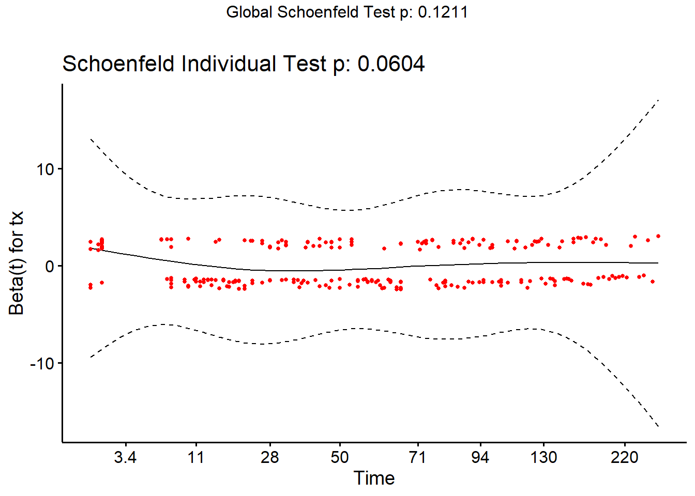
Notez la courbe au tout début (i.e. entre 0 et 28 jours). Le test est près d’être significatif (P = 0.06).
9.5.3 Évaluer impact du non-respect de la supposition de censure non-informative
On ne peut évaluer si la supposition de censure non-informative est respectée, mais ont peut cependant vérifier quel aurait été l’impact d’une censure informative. Pour cela, on doit modifier le jeu de données pour représenter les scénarios les plus extrêmes. D’une part toutes les données censurées remplacées par un échec au moment de la censure (corrélation positive). D’autre part, ont pourrait remplacer la durée de suivi des données censurées par un temps lointain, mais plausible (corrélation négative). Ensuite, on éxécutera le modèle de Cox avec ces deux scénarios et on comparera les résultats obtenus à notre modèle initial. On se demandera : 1) est-ce que les conclusions statistiques changent (e.g. un prédicteur n’est plus significatif) ; et 2) est-ce que les ratio de hasard changent beaucoup (e.g. 2.0 vs. 2.2 ou 2.0 vs. 12.0)?
Par exemple:
#Impact de la censure
#Estimés originaux
library(survival)
PH_fit_pg <- coxph(Surv(dar, preg) ~ tx + lact + thin + herd, data=pgtrial)
#Corrélation positive complète
#Je créer une nouvelle variable où toutes les observations se terminent par l'événement
pgtrial$preg2 <- 1
#Le modèle avec cette variable
PH_fit_pg_pos <- coxph(Surv(dar, preg2) ~ tx + lact + thin + herd, data=pgtrial)
#Corrélation négative complète
#Je créer une nouvelle variable où toutes les vaches non-gestantes auraient vécu jusqu'à au moins 500 JEL sans conception avant d'être finalement réformées
pgtrial$dar2 <- ifelse(pgtrial$preg==1,pgtrial$dar,500)
#Le modèle avec cette variable
PH_fit_pg_neg <- coxph(Surv(dar2, preg) ~ tx + lact + thin + herd, data=pgtrial)
#tableau récapitulatif
tableau <- cbind("Estimés originaux"=exp(PH_fit_pg$coefficients), "Corrélation positive complète"=exp(PH_fit_pg_pos$coefficients), "Corrélation négative complète"=exp(PH_fit_pg_neg$coefficients))
library(knitr)
library(kableExtra)
kable (round(tableau, digits=2), caption="HR d'un traitement à la prostaglandine sur le risque de conception. Modèle initial, puis modèles supposant corrélation positive et négative complètes.")%>%
kable_styling()| Estimés originaux | Corrélation positive complète | Corrélation négative complète | |
|---|---|---|---|
| tx | 1.22 | 1.26 | 1.12 |
| lact | 0.96 | 1.00 | 0.93 |
| thin1 | 0.86 | 0.86 | 0.94 |
| herd2 | 0.75 | 0.80 | 0.77 |
| herd3 | 1.04 | 1.02 | 1.05 |
Ici, on note peu de différence des ratio de hasard d’un modèle à l’autre. Notez que la fonction ggforest() de la librairie survminer produit une autre manière de visualiser/comparer nos résultats. PAr exemple, pour nos 3 modèles:
library(survminer)
par(mfrow=c(1,3))
ggforest(PH_fit_pg, main = "HR modèle initial")## Warning in .get_data(model, data = data): The `data` argument is not provided.
## Data will be extracted from model fit.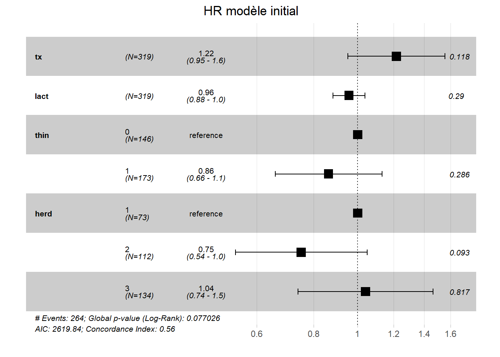
ggforest(PH_fit_pg_pos, main = "HR corrélation positive complète")## Warning in .get_data(model, data = data): The `data` argument is not provided.
## Data will be extracted from model fit.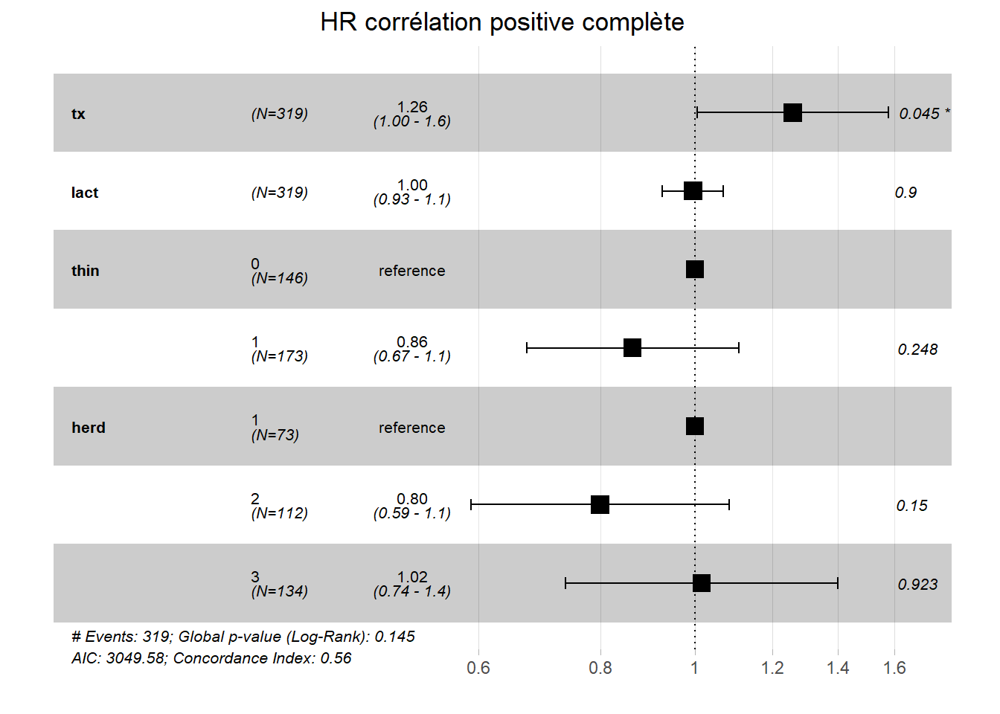
ggforest(PH_fit_pg_neg, main = "HR corrélation négative complète")## Warning in .get_data(model, data = data): The `data` argument is not provided.
## Data will be extracted from model fit.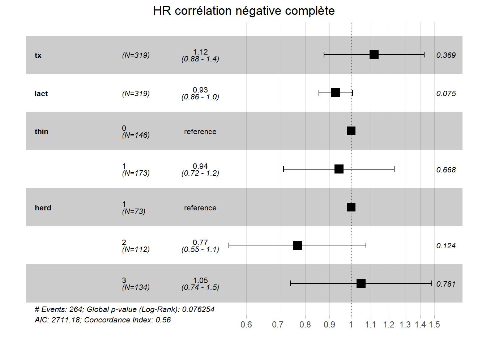